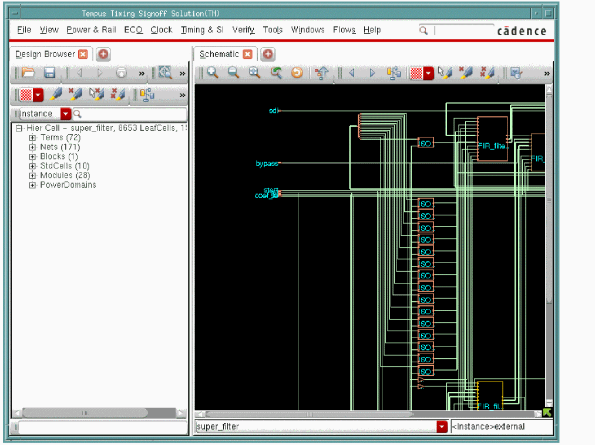
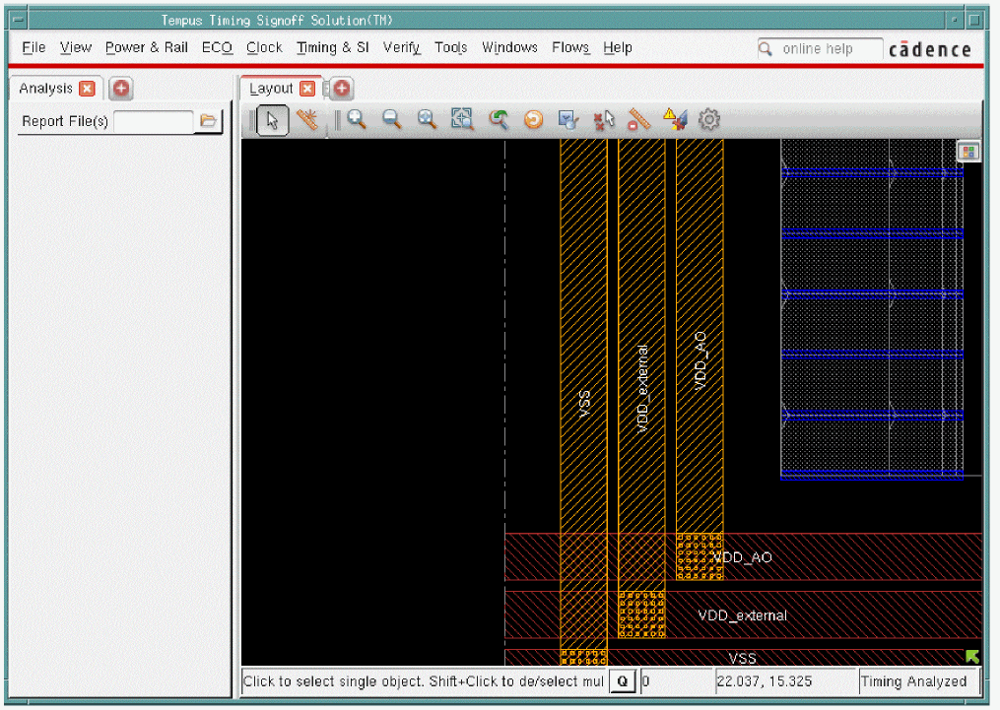
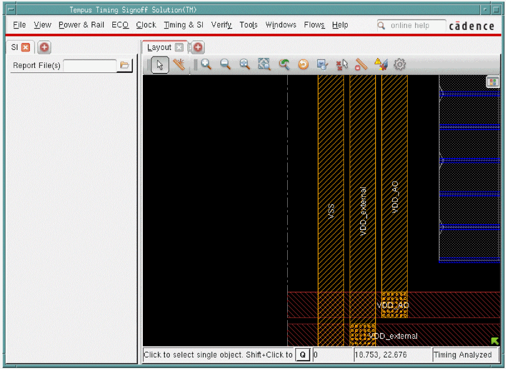
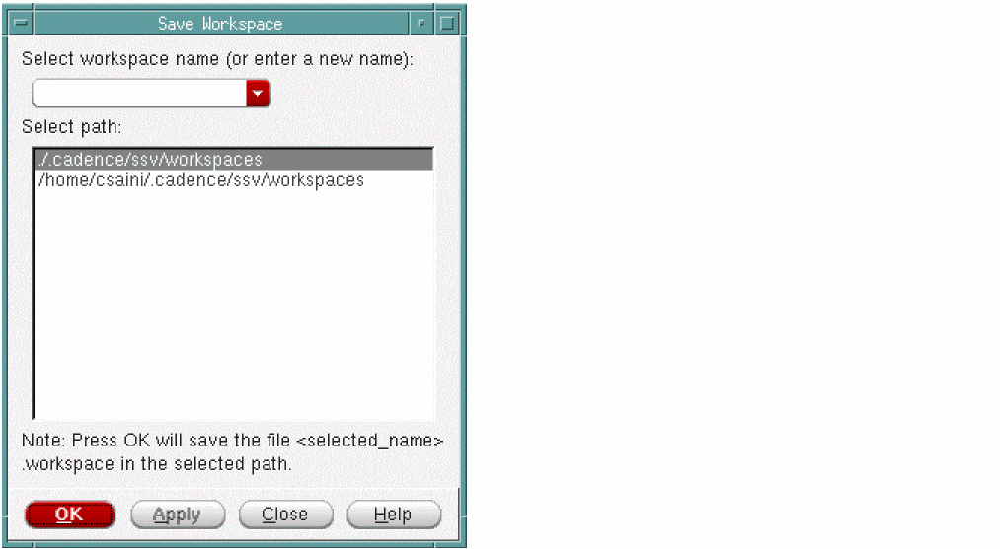
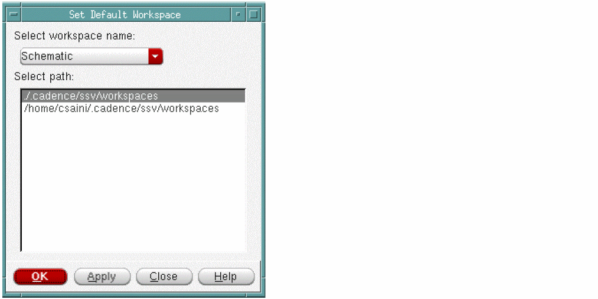

Workspaces
Tempus enables you to save and load your customized window settings easily through workspaces. A workspace contains customized main window settings including:
Use the Workspaces submenu to manage your workspaces. To access this submenu:
The Workspaces submenu contains the following menu items:
- Schematic
- Analysis
- Design Browser + Schematic
- Analysis + Physical
- SI + Physical
- Save Workspace
- Delete
- Set Default
Schematic
Use the Schematic menu item to switch to the Schematic view of your current workspace. For more information, see Schematic Tab.
Analysis
Use the Analysis menu item to switch to the Analysis view of your current workspace. The analysis window displays the violation information, categories defined to group violation types, graphical display of violations, and category summary. For more information, see Analysis Tab.
Design Browser + Schematic
Use the Design Browser + Schematic menu item to see the Design Browser and the schematic view of the design, side by side.

Analysis + Physical
Use the Analysis + Physical menu item to see the Analysis tab and the physical view of the design, side by side.

SI + Physical
Use the SI + Physical menu item to see the SI tab and the physical view of the design, side by side.

Save Workspace
Use the Save Workspace form to save your workspace to a specific directory. You can then load the workspace whenever you want from the specified directory.
Choose Windows - Workspaces - Save Workspace.

Save Workspace Fields and Options
After you have saved a workspace, the saved workspace name appears on the Workspaces submenu. Whenever you want to load a workspace, simply click the saved workspace name in the Workspaces submenu.
If there are multiple workspaces, the one set as default is loaded automatically. If you have not set any workspace as default, the one that you saved last is loaded automatically. You can then switch to another workspace by selecting the corresponding check box in the Workspaces submenu.
Delete
Use the Delete Workspace form to delete the selected workspace.
Delete Workspace Fields and Options
|
Specifies the name of the workspace you are deleting. The drop-down lists all the workspaces in the selected path. |
|
Set Default
Use the Set Default Workspace form to set the selected workspace as default.
The default workspace is loaded automatically when starting up the software. So if you want Tempus to load a workspace automatically, you need to first save it as default.

Set Default Workspace Fields and Options
|
Specifies the name of the workspace you are setting as default. The drop-down lists all the workspaces in the selected path. |
|
Return to top